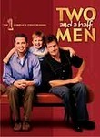
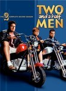
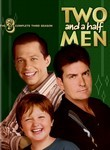
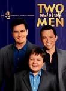
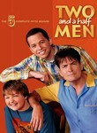
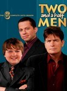
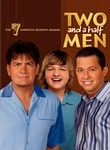
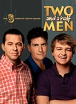

Two and a Half Men
Stephen Klancher
...has seen 1
...has seen 0 hours
...has not seen 4.4 hours

Timeline
Most Recent:
818-jklpuzo
...has seen 1
...has seen 0 hours
...has not seen 4.4 hours
Timeline
Most Recent:
818-jklpuzo


If I Can't Write My Chocolate Song, I'm Going to Take a Nap Airs on 2003-10-13
S1 - E4 of Two and a Half Men
S1 - E4 of Two and a Half Men
Did You Check With the Captain of the Flying Monkeys? Airs on 2003-10-27
S1 - E6 of Two and a Half Men
S1 - E6 of Two and a Half Men






